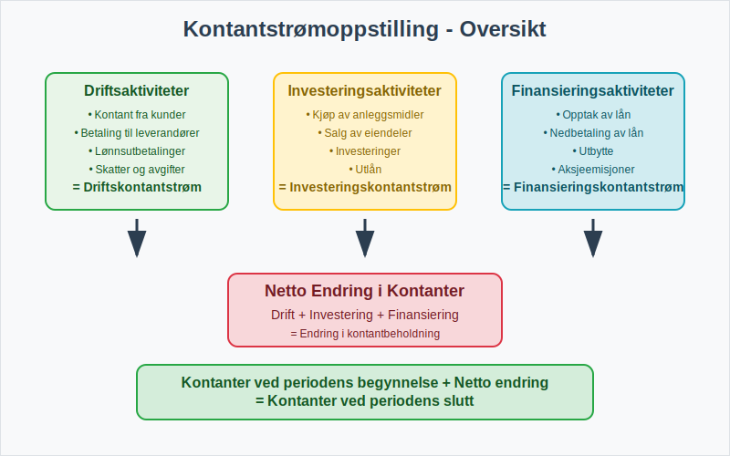
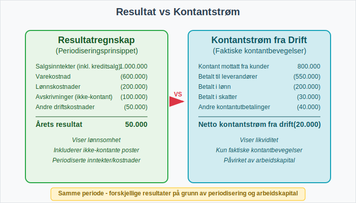
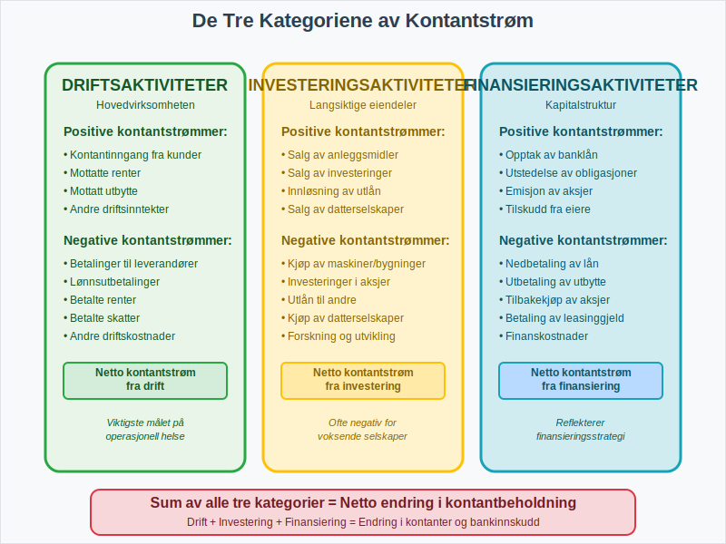
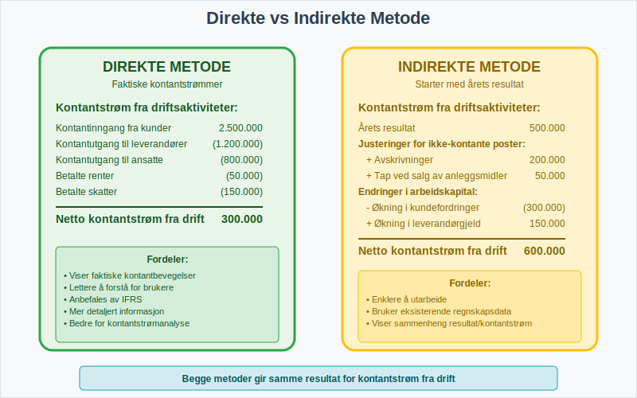
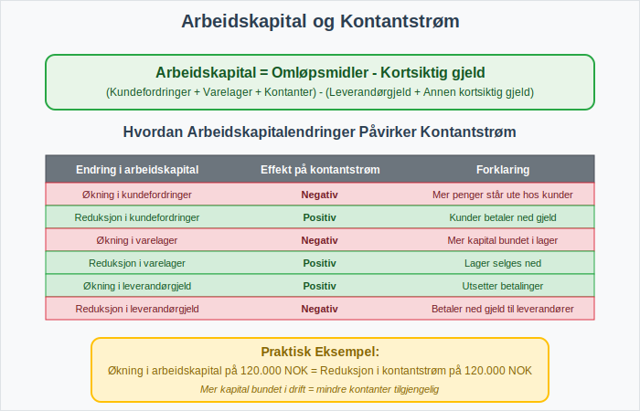
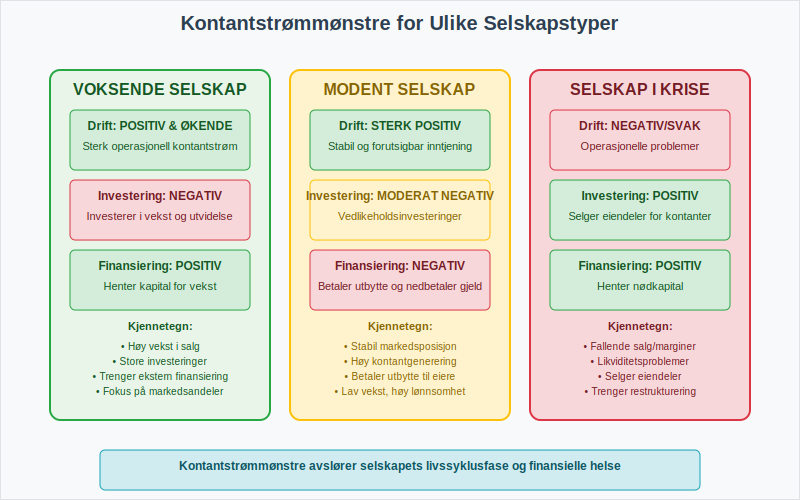
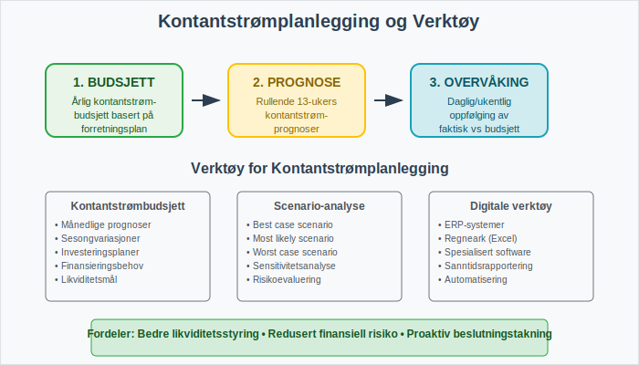

Kontantstrømoppstillingen er en av de tre hovedkomponentene i finansregnskapet og gir et detaljert bilde av hvordan kontanter strømmer inn og ut av en virksomhet over en bestemt periode. Mens resultatregnskapet viser lønnsomhet og balansen viser finansiell stilling, avslører kontantstrømoppstillingen den faktiske kontantbevegelsen som er avgjørende for virksomhetens likviditet og overlevelse.
For å forstå kontantstrømoppstillingens rolle i det større finansregnskapet, er det viktig å se hvordan den kompletterer de andre finansielle rapportene og gir interessenter et helhetlig bilde av virksomhetens økonomiske helse.
For mer informasjon om bevegelsen av kontanter i en virksomhet, se Hva er kontantstrøm?.

Seksjon 1: Kontantstrømoppstillingens Grunnleggende Konsept
1.1 Forskjellen mellom Resultat og Kontantstrøm
En av de viktigste innsiktene fra kontantstrømoppstillingen er forskjellen mellom regnskapsmessig resultat og faktisk kontantstrøm. En virksomhet kan vise overskudd i resultatregnskapet, men likevel ha negativ kontantstrøm på grunn av:
- Periodiseringsprinsippet: Inntekter bokføres når de opptjenes, ikke når kontantene mottas
- Kreditsalg: Salg til debitorer som ennå ikke har betalt
- Ikke-kontante kostnader: Som avskrivninger og amortisering

1.2 Kontantstrømoppstillingens Betydning
Kontantstrømoppstillingen er kritisk for:
- Likviditetsvurdering: Viser virksomhetens evne til å møte kortsiktige forpliktelser
- Investeringsbeslutninger: Hjelper investorer å vurdere kvaliteten på inntjeningen
- Kredittvurdering: Banker bruker den til å vurdere lånekapasitet
- Strategisk planlegging: Ledelsen kan planlegge fremtidige kontantbehov
Seksjon 2: De Tre Hovedkategoriene av Kontantstrøm
Kontantstrømoppstillingen deles inn i tre hovedkategorier som hver representerer ulike aspekter av virksomhetens aktiviteter:

2.1 Kontantstrøm fra Driftsaktiviteter
Dette er kjernen i kontantstrømoppstillingen og viser kontantstrømmen fra virksomhetens hovedaktiviteter:
Positive Kontantstrømmer fra Drift:
- Kontantinngang fra kunder
- Mottatte renter og utbytte
- Andre driftsinntekter
Negative Kontantstrømmer fra Drift:
- Betalinger til leverandører
- Lønnsutbetalinger til ansatte
- Betalte renter
- Betalte skatter
Eksempel på beregning av driftskontantstrøm:
| Driftsaktiviteter | Beløp (NOK) |
|---|---|
| Årets resultat | 500.000 |
| Justeringer for ikke-kontante poster: | |
| + Avskrivninger | 200.000 |
| + Tap ved salg av anleggsmidler | 50.000 |
| Endringer i arbeidskapital: | |
| - Økning i kundefordringer | (150.000) |
| - Økning i varelager | (100.000) |
| + Økning i leverandørgjeld | 80.000 |
| Netto kontantstrøm fra drift | 580.000 |
2.2 Kontantstrøm fra Investeringsaktiviteter
Denne kategorien viser kontantstrømmer knyttet til kjøp og salg av langsiktige eiendeler:
Positive Kontantstrømmer fra Investering:
- Salg av anleggsmidler
- Salg av investeringer i andre selskaper
- Innløsning av langsiktige investeringer
Negative Kontantstrømmer fra Investering:
- Kjøp av maskiner, bygninger og utstyr
- Investeringer i andre selskaper
- Utlån til andre parter
Eksempel på investeringskontantstrøm:
| Investeringsaktiviteter | Beløp (NOK) |
|---|---|
| Kjøp av maskiner og utstyr | (800.000) |
| Salg av gamle maskiner | 150.000 |
| Investering i datterselskap | (300.000) |
| Netto kontantstrøm fra investering | (950.000) |
2.3 Kontantstrøm fra Finansieringsaktiviteter
Denne kategorien viser hvordan virksomheten finansierer sine aktiviteter:
Positive Kontantstrømmer fra Finansiering:
- Opptak av lån
- Emisjon av aksjer
- Tilskudd fra eiere
Negative Kontantstrømmer fra Finansiering:
- Nedbetaling av lån
- Utbetaling av utbytte
- Tilbakekjøp av egne aksjer
Eksempel på finansieringskontantstrøm:
| Finansieringsaktiviteter | Beløp (NOK) |
|---|---|
| Opptak av banklån | 1.000.000 |
| Nedbetaling av eksisterende lån | (400.000) |
| Utbetalt utbytte til aksjonærer | (200.000) |
| Netto kontantstrøm fra finansiering | 400.000 |
Seksjon 3: Metoder for Utarbeidelse
Det finnes to hovedmetoder for å utarbeide kontantstrømoppstillingen:

3.1 Den Direkte Metoden
Den direkte metoden viser de faktiske kontantinnbetalingene og -utbetalingene:
Fordeler:
- Gir mer detaljert informasjon om kontantstrømmene
- Lettere å forstå for ikke-regnskapsfolk
- Anbefales av internasjonale regnskapsstandarder
Ulemper:
- Krever mer detaljert sporing av kontanttransaksjoner
- Kan være kostbart å implementere
Eksempel på direkte metode:
| Kontantstrøm fra driftsaktiviteter | Beløp (NOK) |
|---|---|
| Kontantinngang fra kunder | 2.500.000 |
| Kontantutgang til leverandører | (1.200.000) |
| Kontantutgang til ansatte (lønn) | (800.000) |
| Betalte renter | (50.000) |
| Betalte skatter | (150.000) |
| Netto kontantstrøm fra drift | 300.000 |
3.2 Den Indirekte Metoden
Den indirekte metoden starter med årets resultat og justerer for ikke-kontante poster:
Fordeler:
- Enklere å utarbeide med eksisterende regnskapsdata
- Viser sammenhengen mellom resultat og kontantstrøm
- Mest brukte metoden i praksis
Ulemper:
- Mindre detaljert informasjon om faktiske kontantstrømmer
- Kan være vanskeligere å forstå
Seksjon 4: Arbeidskapitalens Rolle
Arbeidskapital (omløpsmidler minus kortsiktig gjeld) spiller en kritisk rolle i kontantstrømoppstillingen. Endringer i arbeidskapital påvirker direkte kontantstrømmen fra drift:
4.1 Hvordan Arbeidskapitalendringer Påvirker Kontantstrøm
| Endring i arbeidskapital | Effekt på kontantstrøm | Forklaring |
|---|---|---|
| Økning i kundefordringer | Negativ | Mer penger står ute hos kunder |
| Reduksjon i kundefordringer | Positiv | Kunder betaler ned gjeld |
| Økning i varelager | Negativ | Mer kapital bundet i lager |
| Reduksjon i varelager | Positiv | Lager selges ned |
| Økning i leverandørgjeld | Positiv | Utsetter betalinger til leverandører |
| Reduksjon i leverandørgjeld | Negativ | Betaler ned gjeld til leverandører |

4.2 Praktisk Eksempel på Arbeidskapitalberegning
La oss se på hvordan endringer i arbeidskapital beregnes:
År 1:
- Kundefordringer: 500.000 NOK
- Varelager: 300.000 NOK
- Leverandørgjeld: 200.000 NOK
- Arbeidskapital: (500.000 + 300.000) - 200.000 = 600.000 NOK
År 2:
- Kundefordringer: 650.000 NOK
- Varelager: 350.000 NOK
- Leverandørgjeld: 280.000 NOK
- Arbeidskapital: (650.000 + 350.000) - 280.000 = 720.000 NOK
Endring i arbeidskapital: 720.000 - 600.000 = 120.000 NOK økning
Denne økningen på 120.000 NOK reduserer kontantstrømmen fra drift med samme beløp.
Seksjon 5: Analyse og Tolkning
5.1 Nøkkeltall for Kontantstrømanalyse
Flere viktige nøkkeltall kan beregnes fra kontantstrømoppstillingen:
| Nøkkeltall | Formel | Hva det måler |
|---|---|---|
| Operasjonell kontantstrømmargin | Driftskontantstrøm / Driftsinntekter | Hvor mye kontant hver krone i salg genererer |
| Kontantstrøm per aksje | Driftskontantstrøm / Antall aksjer | Kontantgenerering per aksje |
| Kontantstrømdekning | Driftskontantstrøm / Totale investeringer | Evne til å finansiere investeringer |
| Gjeldsdekning | Driftskontantstrøm / Total gjeld | Evne til å betjene gjeld |
5.2 Tolkning av Kontantstrømmønstre
Ulike kombinasjoner av kontantstrøm fra de tre aktivitetskategoriene forteller forskjellige historier:

Voksende Selskap:
- Drift: Positiv og økende
- Investering: Negativ (investerer i vekst)
- Finansiering: Positiv (henter kapital)
Modent Selskap:
- Drift: Sterk positiv
- Investering: Moderat negativ (vedlikeholdsinvesteringer)
- Finansiering: Negativ (betaler utbytte og nedbetaler gjeld)
Selskap i Krise:
- Drift: Negativ eller svak positiv
- Investering: Positiv (selger eiendeler)
- Finansiering: Positiv (henter nødkapital)
Seksjon 6: Kontantstrømoppstilling i Norsk Kontekst
6.1 Regnskapsstandarder og Krav
I Norge følger kontantstrømoppstillingen kravene i:
- God regnskapsskikk for mindre foretak
- IFRS for børsnoterte selskaper
- Regnskapslovens bestemmelser
6.2 Særlige Norske Forhold
Norske virksomheter må ta hensyn til spesielle forhold som påvirker kontantstrømmen:
- MVA-behandling: Merverdiavgift påvirker kontantstrømmen annerledes enn inntekter og kostnader
- Forskuddsskatt: Betalinger av forskuddstrekk påvirker kontantstrømmen
- Feriepenger: Feriepenger skaper tidsmessige forskjeller mellom kostnad og kontantutgang
6.3 Integrasjon med Andre Rapporter
Kontantstrømoppstillingen må stemme overens med andre deler av finansregnskapet:
- Åpningsbalanse kontanter + Netto kontantstrøm = Sluttbalanse kontanter
- Endringer i balansen må forklares gjennom kontantstrømoppstillingen
Seksjon 7: Praktiske Tips og Beste Praksis
7.1 Vanlige Feil og Hvordan Unngå Dem
| Vanlig Feil | Konsekvens | Løsning |
|---|---|---|
| Glemme ikke-kontante poster | Feil driftskontantstrøm | Systematisk gjennomgang av alle justeringer |
| Feilklassifisering av aktiviteter | Misvisende analyse | Klar forståelse av definisjonene |
| Ignorere arbeidskapitalendringer | Unøyaktig kontantstrøm | Detaljert sporing av alle omløpsmidler og kortsiktig gjeld |
7.2 Verktøy for Kontantstrømplanlegging
Moderne virksomheter bruker ulike verktøy for å planlegge og overvåke kontantstrøm:
- Kontantstrømbudsjetter: Fremtidsrettede prognoser
- Rullende prognoser: Kontinuerlig oppdaterte estimater
- Scenario-analyse: Vurdering av ulike utfall

7.3 Digitalisering og Automatisering
Moderne ERP-systemer og fintech-løsninger kan automatisere mye av kontantstrømrapporteringen:
- Automatisk kategorisering av transaksjoner
- Sanntids kontantstrømovervåking
- Integrerte prognoseverktøy
Seksjon 8: Kontantstrømoppstilling for Ulike Virksomhetstyper
8.1 Produksjonsselskaper
Produksjonsselskaper har spesielle utfordringer:
- Store investeringer i maskiner og utstyr
- Kompleks arbeidskapitalstyring med råvarer, produksjon i gang og ferdigvarer
- Sesongvariasjoner i kontantstrøm
8.2 Tjenesteselskaper
Tjenesteselskaper har typisk:
- Lavere investeringsbehov i fysiske eiendeler
- Høyere andel lønnskostnader
- Mer forutsigbar kontantstrøm fra drift
8.3 Handelsselskaper
For handelsselskaper er viktige faktorer:
- Varelagerstyring som kritisk faktor
- Kredittid til kunder som påvirker kontantstrøm
- Sesongmessige svingninger
Seksjon 9: Fremtidige Trender og Utvikling
9.1 Økt Fokus på Kontantstrømkvalitet
Investorer og analytikere fokuserer stadig mer på:
- Bærekraftig kontantstrøm fra kjernevirksomheten
- Kvaliteten på inntjeningen målt gjennom kontantstrøm
- Langsiktig kontantgenereringsevne
9.2 Teknologiske Innovasjoner
Nye teknologier påvirker kontantstrømrapportering:
- Kunstig intelligens for prognoser
- Blockchain for transparens
- Sanntidsrapportering gjennom skybaserte løsninger
9.3 Regulatoriske Endringer
Fremtidige endringer kan inkludere:
- Strengere krav til kontantstrømrapportering
- Standardisering av rapporteringsformater
- Økt fokus på bærekraftsrelaterte kontantstrømmer
Konklusjon
Kontantstrømoppstillingen er et uunnværlig verktøy for å forstå en virksomhets finansielle helse og likviditet. Den gir innsikt som ikke kan oppnås gjennom resultatregnskapet eller balansen alene, og er kritisk for:
- Ledelsens strategiske beslutninger
- Investorers vurdering av investeringsmuligheter
- Kreditorers risikovurdering
- Regulatoriske rapporteringskrav
Ved å mestre kontantstrømoppstillingen får interessenter et komplett bilde av virksomhetens økonomiske situasjon og fremtidsutsikter. For virksomheter som ønsker å optimalisere sin kontantstrømstyring, er det essensielt å forstå sammenhengen mellom arbeidskapital, driftskostnader og langsiktige investeringsstrategier.
I en stadig mer kompleks forretningsverden blir kontantstrømoppstillingen et stadig viktigere verktøy for å navigere økonomiske utfordringer og muligheter.